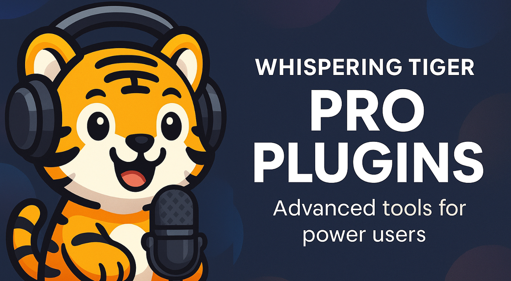

Pro Plugins are paid extensions for Whispering Tiger. The base application is free and open source. Plugin purchases support development.
Available Pro Plugins
Tiger Voice Pro
Realtime Voice Changer with Zero-Shot Voice Cloning
- Realtime Voice Changing – for live voice chat, streams or meetings.
- Zero-Shot Voice Cloning – create a new voice from just a short reference sample.
- Full Audio File Processing – apply voice changing to entire audio or video files.
- Deep TTS Integration – works with every Text-to-Speech model available in Whispering Tiger.
How Tiger Voice Pro Fits into Whispering Tiger
Tiger Voice Pro integrates into the existing Whispering Tiger pipeline. You can route audio from:
- Realtime Microphone Input – capture your voice and transform it live.
- Denoising In- / Output – for noise reduction before or after voice changing.
- Audio / Video Files – process long-form content in one go.
- Any Whispering Tiger TTS Output – send generated speech into Tiger Voice Pro for further voice conversion.
For spoken translation with voice conversion, route STT → Translation → TTS → Tiger Voice Pro locally.
Voice conversion demo: compare the original and changed voice.
Screenshots
You can also browse free plugins in the app. See how to install plugins.
For plugin help and updates, visit community support.